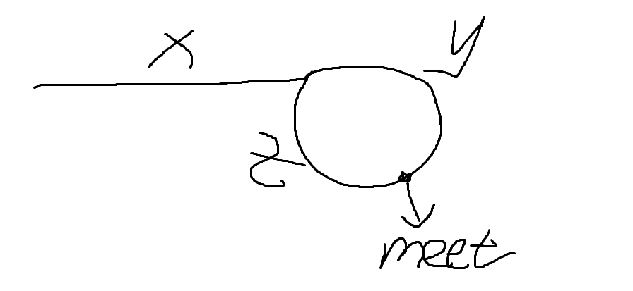
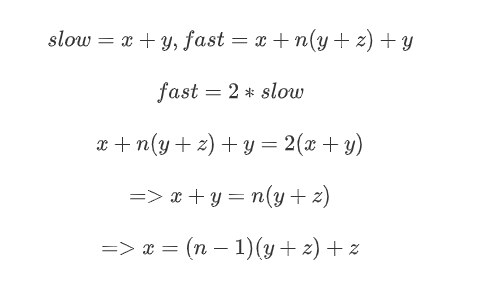
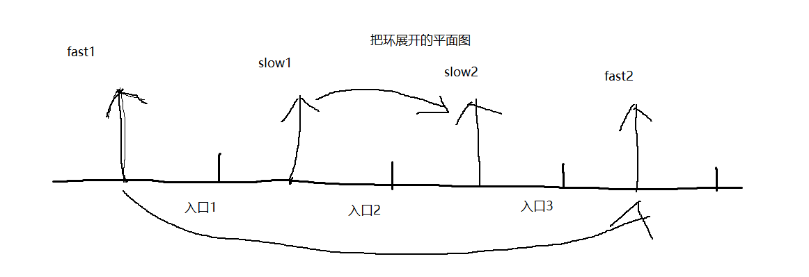

141.环形链表I，142.环形链表II
141.环形链表I
给你一个链表的头节点 head ，判断链表中是否有环。
如果链表中有某个节点，可以通过连续跟踪 next 指针再次到达，则链表中存在环。 为了表示给定链表中的环，评测系统内部使用整数 pos 来表示链表尾连接到链表中的位置（索引从 0 开始）。注意：pos 不作为参数进行传递 。仅仅是为了标识链表的实际情况。
如果链表中存在环 ，则返回 true 。 否则，返回 false 。
这里给出一个判定方法，Floyd判定法，使用一对快慢指针，若存在环，那么两个指针必然在某节点相遇，代码实现如下：
class Solution {
public:
bool hasCycle(ListNode *head) {
ListNode* fast = head,*slow = head;
while(fast && fast->next){
fast = fast->next->next;
slow = slow->next;
if(fast == slow){
return true;
}
}
return false;
}
};142.环形链表II
给定一个链表的头节点 head ，返回链表开始入环的第一个节点。 如果链表无环，则返回 null。
如果链表中有某个节点，可以通过连续跟踪 next 指针再次到达，则链表中存在环。 为了表示给定链表中的环，评测系统内部使用整数 pos 来表示链表尾连接到链表中的位置（索引从 0 开始）。如果 pos 是 -1，则在该链表中没有环。注意：pos 不作为参数进行传递，仅仅是为了标识链表的实际情况。
不允许修改 链表。
和上一题的区别是，我们需要返回入环的第一个结点。思路如下：
判断是否存在环路，无环直接返回null
若有环，找出环入口，这里有两种方法：
- 使用哈希表记录每个结点，遍历结点时查询是否已经在HashMap里。
- 使用数学方法，推导如下：


慢指针一定没转完一圈就相遇，详细的数学推导这里不给出，这里简单说一下，假设fast，slow已经在环内某个位置，当slow下一次走了一圈走到同样位置的时候，fast走了两圈，是一定覆盖slow走的所有可能路径的，所以slow=x+y，这里给出一张草图。

因此我们设定一个指针从头结点开始，和slow同步移动，他们必在环开端相遇。下面给出代码。
class Solution {
public:
ListNode *detectCycle(ListNode *head) {
ListNode* fast = head,*slow = head;
do{
if(!fast || !fast->next)
return nullptr;
fast = fast->next->next;
slow = slow->next;
}while(fast != slow);
ListNode* ptr = head;
while(ptr != slow){
ptr = ptr->next;
slow = slow->next;
}
return ptr;
}
};